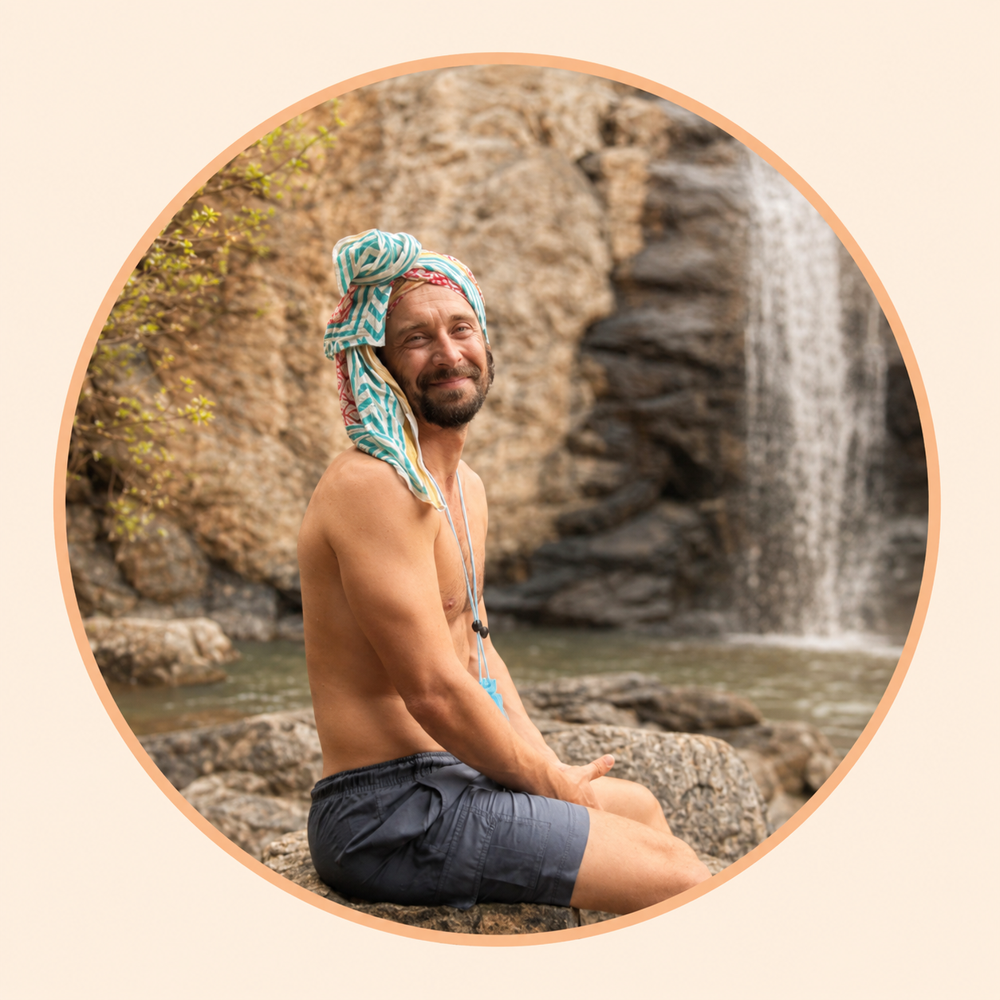

СОЗДАТЕЛЬ ПРОЕКТА
Евгений
Новиков
РУКОВОДИТЕЛЬ DZEN RETREAT
Евгений создаёт Dzen Retreat как пространство, в котором путешествие в Индию становится не просто отпуском, а временем для живой внутренней перезагрузки. Он соединяет опыт организации, любовь к йоге, знание Гоа и внимательное отношение к каждому участнику.
Для Евгения важны детали, из которых складывается чувство безопасности: встреча после дороги, комфорт проживания, тёплая группа, понятная программа и поддержка в любой момент. Он сопровождает участников от первого сообщения до возвращения домой и помогает сделать путешествие спокойным, наполненным и личным.
Подход
Dzen Retreat вырос из идеи, что человеку не нужно «успеть стать лучше» за двенадцать дней. Достаточно дать себе пространство, море, движение, новые впечатления и честную паузу. Евгений собирает именно такую среду — бережную, красивую и живую.
- На ретрите: организация, сопровождение, маршрут и забота о группе
- Для кого: для тех, кто хочет путешествовать уверенно и чувствовать поддержку